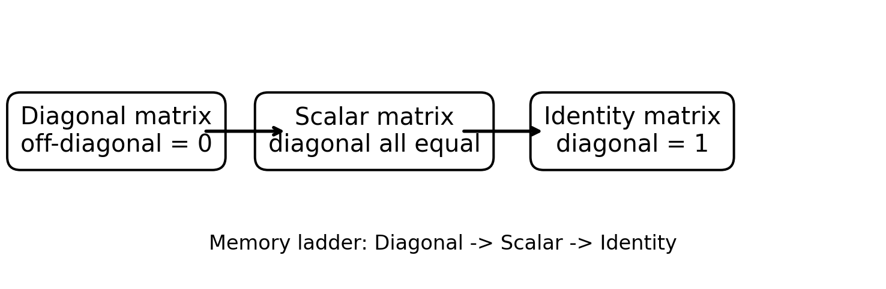
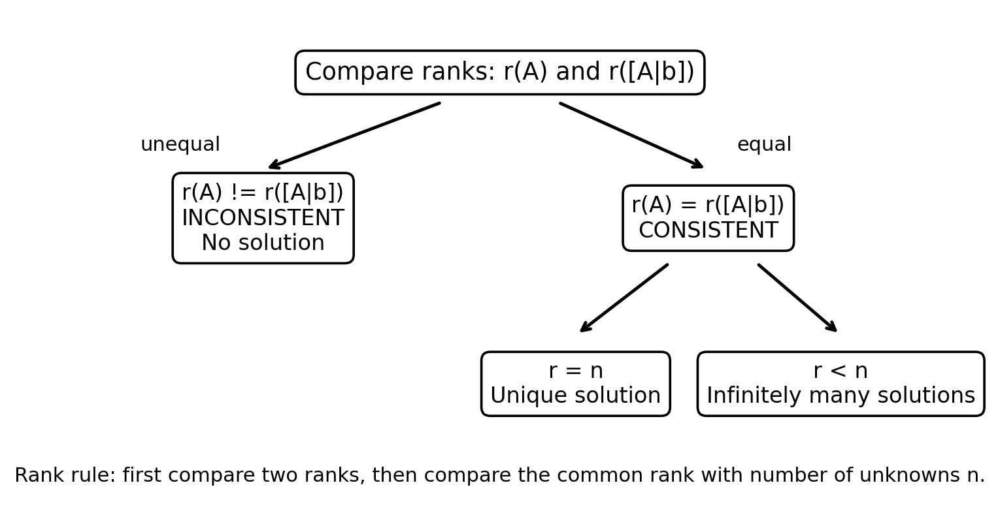
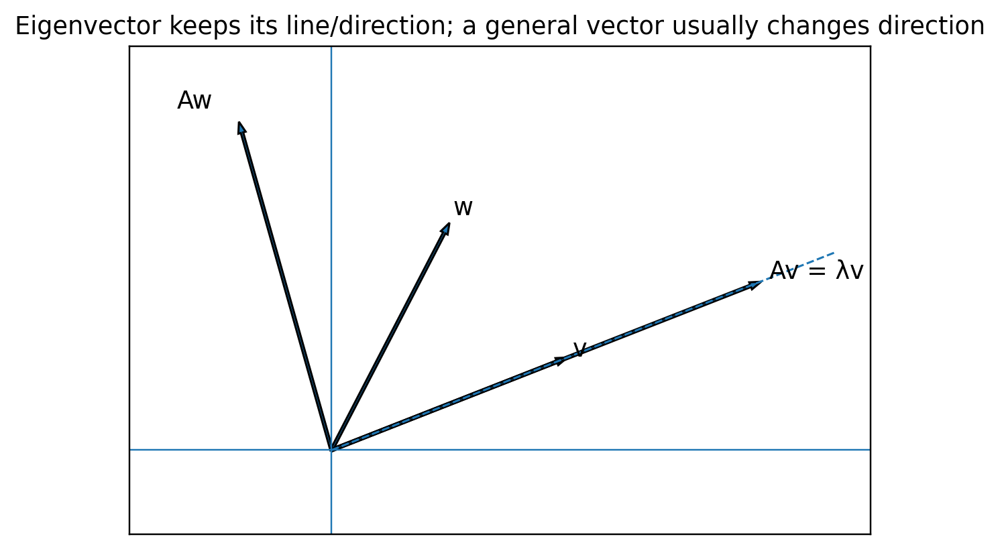
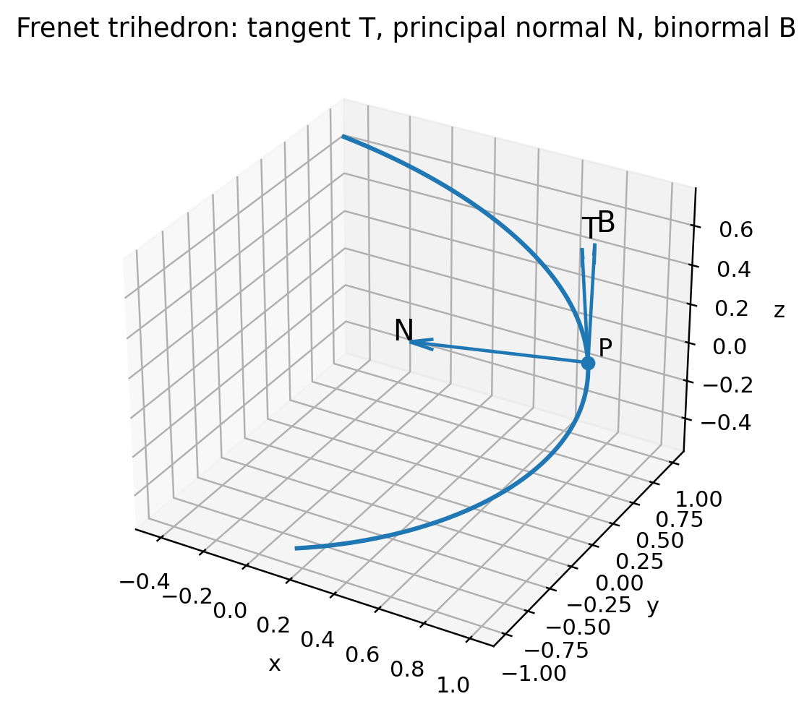
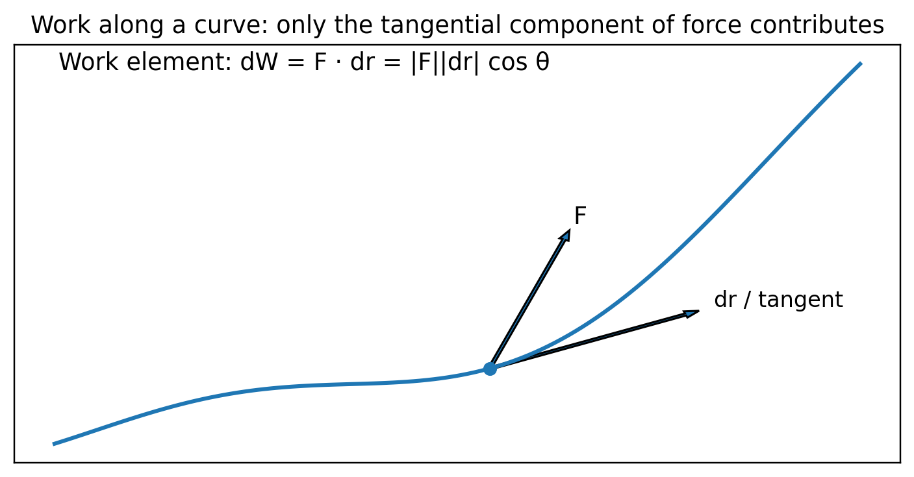
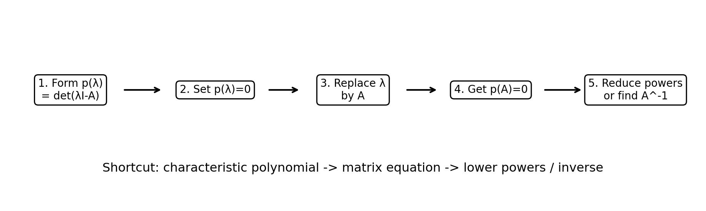

KUET MATHEMATICS - III
SECTION A CLASS NOTE
Math 2123 | Exam-oriented, source-grounded study edition

Core memory ladder used throughout Set A1.
Matrix • Linear Systems • Eigen Analysis • Vector Kinematics • Work • Cayley-Hamilton
Credit: Made by K.I.Rohan
Prepared from the uploaded class notes, reference books, and the 2015-2025 Math 2123 question bank.
How to use this note
| Exam strategy Section A has 4 sets in this analysis framework, but you answer 3. Sets A1-A3 are the safest core because they repeat most consistently. Set A4 is the flexible backup; however, its kinematics/work questions are often scoring when practiced. |
|---|
| Set | Main block | Best use |
|---|---|---|
| A1 | Matrix fundamentals + short proofs | High-return theory + 10-15 mark matrix tasks |
| A2 | Inverse + rank + consistency + dependence | Algorithmic, predictable, very exam-friendly |
| A3 | Forms + eigenvalue/eigenvector + diagonalization | Long but structured; usually high marks |
| A4 | Vector kinematics + work + Cayley-Hamilton | Backup set; formula-driven and scoring |
| বাংলা ব্যাখ্যার নিয়ম কঠিন ইংরেজি term-এর পাশে ছোট বাংলা অর্থ দেওয়া হয়েছে। কিন্তু formula, theorem name, matrix notation ইংরেজিতেই রাখা হয়েছে—যাতে exam script-এর language-এর সাথে মিল থাকে। |
|---|
| Source note Historical papers sometimes moved the same topic between Section A and Section B. This class note follows the A1-A4 topic map from the Question Bank Analysis, while the “Matching Question” tables tag the historical appearances regardless of old section placement. |
|---|
Fast navigation
| Set | What you must master | Memory hook |
|---|---|---|
| A1 | Types, transpose, decomposition, orthogonal, idempotent/involutory/nilpotent | Mirror / sign / power |
| A2 | ERO inverse, rank, consistency, homogeneous systems, dependence | D-R-I + R-R-n |
| A3 | REF/RREF/normal, eigen, diagonalization | Pivot path + D-S-V |
| A4 | v-a, TNB, curvature/torsion, work, CH | v->T->N->B + p(λ)->p(A) |
VERY HIGH PRIORITY
SET A1 — Matrix Fundamentals & Core Theorems
এই set-এ short definition, “define with example”, ছোট proof, matrix classification এবং decomposition খুব বেশি আসে। লক্ষ্য: condition দেখে 3-5 সেকেন্ডে matrix type চিনতে পারা।
1. Matrix type master table
| Type | Test / condition | বাংলা cue |
|---|---|---|
| Square | m=n | সারি = কলাম |
| Diagonal | a_ij=0 for i≠j | মূল কর্ণ ছাড়া সব 0 |
| Scalar | Diagonal + all diagonal entries equal | একই scalar বারবার |
| Identity | Scalar with diagonal 1 | 1 on diagonal |
| Upper triangular | a_ij=0 for i>j | কর্ণের নিচে 0 |
| Lower triangular | a_ij=0 for i<j | কর্ণের উপরে 0 |
| Symmetric | A^T=A | mirror করলে একই |
| Skew-symmetric | A^T=−A | mirror করলে sign বদলায়; diagonal 0 |
| Orthogonal | A^TA=AA^T=I | transpose = inverse |
| Singular | det(A)=0 | inverse নেই |
| Non-singular | det(A)≠0 | inverse আছে |
| Idempotent | A²=A | দুইবার করলেও একই |
| Involutory | A²=I | নিজেই নিজের inverse |
| Nilpotent | A^k=0 for some k≥1 | কিছু power-এ zero |
| Hermitian | A†=A | complex symmetric-এর analogue |
| Skew-Hermitian | A†=−A | complex skew analogue |
| Elementary | I-এর উপর one elementary operation | one-operation matrix |
| Equivalent | B=PAQ, P,Q non-singular | row+column ops-এ পাওয়া |
| Trace | tr(A)=Σa_ii | diagonal sum |
| Principal submatrix | same indexed rows and columns retained | একই row/column index set |
Diagonal -> Scalar -> Identity: each step adds a stronger condition.
| Shortcut — D-S-I Identity ⊂ Scalar ⊂ Diagonal. তাই “identity কি diagonal?” — হ্যাঁ। “diagonal কি scalar?” — সবসময় নয়। |
|---|
2. Symmetric vs skew-symmetric — mirror rule
Symmetric: A^T = A | Skew-symmetric: A^T = -A Skew-symmetric হলে a_ii = -a_ii ⇒ a_ii = 0 |
|---|
| মনে রাখুন Main diagonal-কে আয়না ভাবুন। Symmetric-এ আয়নার দুই পাশে সংখ্যা একই; skew-symmetric-এ magnitude একই কিন্তু sign বিপরীত। |
|---|
Theorem: every real square matrix splits into symmetric + skew-symmetric parts
A = ½(A + A^T) + ½(A - A^T) = P + Q P^T=P and Q^T=-Q |
|---|
Proof idea: transpose P এবং Q নিলেই যথাক্রমে P ও -Q পাওয়া যায়। Uniqueness-এর জন্য A=P+Q এবং A^T=P−Q যোগ/বিয়োগ করলে P=½(A+A^T), Q=½(A−A^T) বাধ্যতামূলক।
Worked example
Let A = [[1,3,-1],[0,2,4],[2,-1,5]]. Then:
| P = ½(A+A^T) = [[1, 3/2, 1/2],[3/2, 2, 3/2],[1/2, 3/2, 5]] |
|---|
| Q = ½(A-A^T) = [[0, 3/2, -3/2],[-3/2, 0, 5/2],[3/2, -5/2, 0]] |
|---|
| Check P+Q=A, P^T=P, Q^T=-Q. Exam-এ তিনটি check লিখলে solution সম্পূর্ণ ও convincing হয়। |
|---|
3. Orthogonal matrix
| A orthogonal ⇔ A^TA = I ⇔ AA^T = I ⇔ A⁻¹ = A^T |
|---|
Geometric meaning: orthogonal transformation length এবং angle preserve করে। তাই columns (এবং rows) unit এবং mutually orthogonal হয়।
Exam test example
| B = (1/3)[[2,2,1],[-2,1,2],[1,-2,2]] |
|---|
Column dot-products: each column has squared length (4+4+1)/9=1; distinct columns have dot product 0. Hence B^TB=I, so B is orthogonal.
| Shortcut 3×3 matrix-এ full multiplication না করেও columns-এর length 1 এবং pairwise dot product 0 দেখালে B^TB=I প্রমাণ হয়ে যায়। |
|---|
4. Idempotent, involutory, nilpotent
| Type | Power test | Immediate consequence / clue |
|---|---|---|
| Idempotent | A²=A | Aⁿ=A for n≥1; eigenvalues 0 or 1 |
| Involutory | A²=I | A⁻¹=A; eigenvalues ±1 |
| Nilpotent | A^k=0 | all eigenvalues 0; smallest such k = index |
Nilpotent example: N=[[0,1],[0,0]], N²=0, so index = 2. Involutory example: S=[[0,1],[1,0]], S²=I.
Proof pattern: if A is involutory, show ½(I±A) are idempotent
P = ½(I+A) ⇒ P² = ¼(I+2A+A²) = ½(I+A) = P use A²=I; same for Q=½(I-A) |
|---|
| Memory hook Idempotent = “নিজেকে square করেও unchanged”; Involutory = “square করলে identity”; Nilpotent = “power বাড়াতে বাড়াতে zero”. |
|---|
5. Hermitian and skew-Hermitian
| A† = (conjugate of A)^T | Hermitian: A†=A | Skew-Hermitian: A†=-A |
|---|
Real entries হলে conjugate বদলায় না, তাই real matrix-এর ক্ষেত্রে Hermitian becomes symmetric, এবং skew-Hermitian becomes skew-symmetric. Hermitian matrix-এর diagonal entries real; skew-Hermitian-এর diagonal entries purely imaginary or zero.
Complex decomposition: A = ½(A+A†) + ½(A-A†) first part Hermitian, second part skew-Hermitian |
|---|
6. Matrix arithmetic is not ordinary real-number arithmetic
| Property that can fail | Counterexample / reason |
|---|---|
| AB = BA | Generally false: matrix multiplication is non-commutative. |
| AB=0 ⇒ A=0 or B=0 | False: nonzero matrices can be zero divisors. |
| AB=AC ⇒ B=C | False if A is singular; cancellation needs suitable invertibility. |
Zero-divisor example: A=[[1,0],[0,0]], B=[[0,0],[1,0]] are both nonzero but AB=0. Cancellation failure: with A=[[1,0],[0,0]], B=I and C=[[1,0],[1,0]], AB=AC although B≠C.
7. Proof mini-bank for A1
| Proof / derivation | One-line route |
|---|---|
| Diagonal entries of skew-symmetric are zero | a_ii = -a_ii ⇒ 2a_ii=0 |
| If A symmetric & nonsingular, A⁻¹ symmetric | (A⁻¹)^T=(A^T)⁻¹=A⁻¹ |
| A=P+Q symmetric + skew, uniquely | P=½(A+A^T), Q=½(A-A^T) |
| Involutory ⇒ ½(I±A) idempotent | expand square and use A²=I |
| Direction-cosine matrix is orthogonal | rows/columns are orthonormal ⇒ AA^T=I |
Matching questions from the question bank — A1
| Year / Q | Matching question family | Priority |
|---|---|---|
| 2015 Q1 | Equivalent, singular, trace, symmetric; matrix arithmetic exceptions | ★★★ |
| 2016 Q1 / Q4 | Matrix/scalar/Hermitian/trace; Hermitian decomposition; symmetric inverse | ★★★ |
| 2017 Q5 | Skew-symmetric, principal submatrix, elementary, diagonal; decomposition | ★★★ |
| 2018 Q1-Q4 | Orthogonal/Hermitian/idempotent/lower triangular; decomposition; skew diagonal zero; involutory proof | ★★★ |
| 2019 Q1/Q3 | Orthogonal test; symmetric parameter problem | ★★ |
| 2021 Q4 | Skew-symmetric, singular, diagonal definitions | ★★ |
| 2022 Q7 | Direction-cosine matrix -> orthogonal proof | ★★ |
| 2023 Q5 | Skew-symmetric/diagonal/orthogonal + decomposition | ★★★ |
| 2024 Q5 | Orthogonal/elementary/non-singular definitions | ★★★ |
| 2025 Q1 | Lower triangular/symmetric/nilpotent/idempotent; nilpotent index; decomposition | ★★★ |
A1 rapid recall - 5 minute self-test
| Without looking (1) Write conditions for symmetric, skew-symmetric, orthogonal, idempotent, nilpotent. (2) Prove skew-symmetric diagonal = 0. (3) Write A=P+Q decomposition. (4) State three ways matrices differ from real-number arithmetic. |
|---|
VERY HIGH PRIORITY
SET A2 — Inverse, Rank, Consistency & Linear Dependence
এই set-এর সবচেয়ে বড় advantage: নিয়ম ঠিক থাকলে answer প্রায় mechanical. ভুল কমানোর মূল কৌশল হলো row operation পরিষ্কার লিখে প্রতিটি step audit করা।
1. Elementary transformations (ERO/ECO)
| Operation | Row form | What it does |
|---|---|---|
| Interchange | Rᵢ <-> Rⱼ | row swap |
| Scaling | Rᵢ -> kRᵢ, k≠0 | pivot normalize |
| Replacement | Rᵢ -> Rᵢ + kRⱼ | eliminate an entry |
| Exam discipline যে operation করবেন, left margin-এ লিখুন। এক line-এ অনেক operation করলে sign error ধরা কঠিন হয়। |
|---|
2. Inverse by Gauss-Jordan elementary row transformation
[ A | I ] --same row operations--> [ I | A⁻¹ ] possible only when A is nonsingular / full rank |
|---|
Invertibility quick test for n×n square A: det(A)≠0 ⇔ rank(A)=n ⇔ A⁻¹ exists. এই তিনটি condition-কে D-R-I হিসেবে মনে রাখুন: Determinant, Rank, Inverse.
| Shortcut — D-R-I det ≠ 0 -> full rank -> inverse exists. det = 0 -> rank<n -> inverse does not exist. |
|---|
Worked class-note example
| A = [[-2,1,3],[0,-1,1],[1,2,0]], det(A)=8 ≠ 0 |
|---|
Augment with identity and row-reduce. The class-note Gauss-Jordan sequence yields:
| A⁻¹ = [[-1/4, 3/4, 1/2],[1/8, -3/8, 1/4],[1/8, 5/8, 1/4]] |
|---|
| Final check A·A⁻¹=I (or A⁻¹·A=I) লিখে verify করুন। বিশেষ করে fraction-heavy inverse-এ এই check marks বাঁচায়। |
|---|
3. Rank — “কতগুলো independent information আছে?”
Rank is the maximum number of linearly independent rows/columns. Row-reduction-এ rank = echelon form-এর nonzero rows/pivots-এর সংখ্যা।
| rank(A) = number of pivots = number of nonzero rows in REF |
|---|
Important: elementary row/column operations rank পরিবর্তন করে না। Normal form [Iᵣ 0; 0 0]-এ identity block-এর order r-ই rank.
4. Consistent / inconsistent system — Rouché-Capelli rank rule

Decision tree for Ax=b using rank(A), rank([A|b]) and number of unknowns n.
| Shortcut — R-R-n Step 1: rank(A) বনাম rank([A|b]) compare. Step 2: equal হলে common rank r বনাম unknown count n compare. |
|---|
| Condition | Conclusion | বাংলা meaning |
|---|---|---|
| r(A) ≠ r([A|b]) | Inconsistent | সমাধান নেই |
| r(A)=r([A|b])=n | Unique solution | একটি সমাধান |
| r(A)=r([A|b])<n | Infinitely many solutions | অসীম সমাধান / free variable আছে |
Parameter technique example
System: x+y+z=1; 2x+3y+4z=2; x+2y+3z=k. Coefficient-wise, row 2 = row 1 + row 3. Therefore consistency demands RHS 2 = 1+k, so k=1.
If k=1, rank(A)=rank([A|b])=2<3 -> infinitely many solutions. If k≠1, augmented rank becomes larger -> inconsistent.
| Fast insight Parameter problem-এ আগে coefficient rows-এর relation খুঁজুন। RHS একই relation মানে কিনা দেখলে অনেক সময় full elimination ছাড়াই condition পাওয়া যায়। |
|---|
5. Homogeneous system Ax=0: trivial vs non-trivial
| Ax = 0 always has x=0 (trivial solution). |
|---|
| Case | Square A | General m×n viewpoint |
|---|---|---|
| Only trivial | det(A)≠0 | rank(A)=n (no free variable) |
| Non-trivial exists | det(A)=0 | rank(A)<n (at least one free variable) |
| বাংলা cue Trivial = সব variable zero. Non-trivial = অন্তত একটি variable nonzero. |
|---|
6. Linear dependence / independence
Vectors v1,...,vn are linearly independent if c1 v1 + c2 v2 + ... + cn vn = 0 only has c1=c2=...=cn=0. Otherwise they are dependent.
| Put vectors as columns of M. If rank(M)=number of vectors -> independent; otherwise dependent. |
|---|
Example: v1=(1,2,1), v2=(2,1,3), v3=(3,3,4). Since v3=v1+v2, the set is dependent immediately — no determinant needed.
| Shortcut প্রথমে obvious relation খুঁজুন (sum, multiple, zero vector). না পেলে rank/determinant method নিন। |
|---|
7. Inverse existence checklist
| Equivalent statement for square A | Exam use |
|---|---|
| det(A)≠0 | fastest numerical test |
| rank(A)=n | row-reduction context |
| Ax=0 has only trivial solution | systems context |
| columns/rows are linearly independent | vector context |
| A row-reduces to I | Gauss-Jordan context |
Matching questions from the question bank — A2
| Year / Q | Matching question family | Priority |
|---|---|---|
| 2015 Q2-Q4 | Inverse by ERO; parameter consistency; homogeneous non-trivial; vector dependence | ★★★ |
| 2016 Q2-Q3 | Inverse/existence; systems; trivial vs non-trivial | ★★★ |
| 2017 Q6 | Inverse by ERO + consistency/system classification | ★★★ |
| 2018 Q1/Q3 | Inverse by ERO + consistency / many solutions | ★★★ |
| 2019 Q1-Q2 | Parameter solution; parameter-dependent rank; inverse work | ★★★ |
| 2020 Q3/Q6 | Augmented system, consistency, rank/adjoint | ★★ |
| 2021 Q4 / Sec-B system | Inverse by ERO + linear systems | ★★ |
| 2022 Q4 | Parameter-dependent solution type | ★★★ |
| 2023 Q5-Q6 | Inverse/product of elementary matrices; dependence; homogeneous/system parameters | ★★★ |
| 2024 Q5-Q6 | Dependence; invertibility/inverse; parameter system | ★★★ |
| 2025 Q2 | Inverse existence + ERO; parameter system; dependence | ★★★ |
VERY HIGH PRIORITY
SET A3 — Echelon / Canonical / Normal Form + Eigen Block
এই set-এ দুইটি recurring engine আছে: (i) row/column reduction ও rank, (ii) characteristic equation থেকে eigenvalue/eigenvector. Step-order ঠিক রাখাই মূল।
1. REF, RREF (row canonical) and normal form
| Form | Core condition | Use |
|---|---|---|
| REF / Echelon | nonzero rows above zero rows; pivots staircase to the right; entries below pivots zero | rank + back substitution |
| RREF / Row canonical | REF + each pivot is 1 and the only nonzero entry in its column | canonical row solution form |
| Normal form (equivalence) | using row + column ops: [Iᵣ 0; 0 0] | rank + equivalence |
| Accuracy note Some class slides normalize REF pivots to 1. Standard REF only requires a nonzero leading entry; normalizing it to 1 is allowed and convenient. RREF, however, definitely requires pivot 1 and zeros above/below each pivot. |
|---|
2. Reduction workflow
1. Create first pivot; clear entries below it.
2. Move to next row/column; repeat staircase elimination -> REF.
3. Normalize pivots to 1 and clear above pivots -> RREF / row canonical form.
4. If normal form is required, use column operations too to convert RREF to [Iᵣ 0;0 0].
5. Rank = number of pivots = r.
Small worked example
| E = [[1,2,1],[2,4,2],[1,1,0]] |
|---|
| RREF(E) = [[1,0,-1],[0,1,1],[0,0,0]], rank(E)=2 |
|---|
Then column operation C₃ -> C₃ + C₁ − C₂ gives normal form diag(1,1,0).
| Normal-form cue Normal form দেখলেই block identity চিনুন: identity block-এর size = rank. |
|---|
3. Tracking P and Q in PAQ = normal form
If a problem asks for non-singular P,Q such that PAQ=N, keep a “shadow identity” beside A: every row operation on A is applied to the left identity to build P; every column operation is applied to the right identity to build Q.
| P A Q = N = [[Iᵣ,0],[0,0]] |
|---|
| Common mistake Row operations generate left multiplication (P·A). Column operations generate right multiplication (A·Q). এই দিক উল্টে ফেলবেন না। |
|---|
4. Eigenvalue and eigenvector — intuition

Eigenvector একটি বিশেষ direction: A প্রয়োগ করলে vector সেই একই line-এ থাকে; শুধু scale (এবং λ<0 হলে direction sense) বদলায়.
| A x = λ x, x ≠ 0 |
|---|
| বাংলা cue Eigenvector = transformation-এর পর “দিকের line একই”; eigenvalue λ = কত গুণ stretch/shrink (বা sign flip) হলো। |
|---|
5. D-S-V algorithm for eigen problems
1. D — Determinant: form det(A−λI)=0 (or monic det(λI−A)=0).
2. S — Solve the characteristic equation for λ.
3. V — Vector: for each λ solve (A−λI)x=0 and take any nonzero solution.
| Sign convention det(A−λI)=0 এবং det(λI−A)=0 roots একই দেয় (global sign may differ for odd order). একটি convention ধরে শেষ পর্যন্ত consistent থাকুন। |
|---|
Worked class-note example
| A = [[1,1,3],[1,5,1],[3,1,1]] |
|---|
Characteristic equation gives eigenvalues λ = -2, 3, 6. Corresponding convenient eigenvectors are:
| λ | One eigenvector x | Quick check |
|---|---|---|
| -2 | (-1, 0, 1)^T | Ax=-2x |
| 3 | (1, -1, 1)^T | Ax=3x |
| 6 | (1, 2, 1)^T | Ax=6x |
| Eigenvector freedom If x is an eigenvector, any nonzero scalar multiple cx is also an eigenvector for the same λ. তাই answer অন্য multiple হলেও correct. |
|---|
6. High-value eigen properties
| Property | Formula / statement |
|---|---|
| Trace | Σ eigenvalues = tr(A), counting algebraic multiplicity |
| Determinant | Π eigenvalues = det(A) |
| Triangular matrix | eigenvalues are diagonal entries |
| Transpose | A and A^T have the same characteristic polynomial/eigenvalues |
| Inverse | if A invertible: eigenvalues of A⁻¹ are 1/λ |
| Power | if Ax=λx, then A^m x = λ^m x |
| Distinct λ | eigenvectors from distinct eigenvalues are linearly independent |
| Real symmetric A | eigenvalues real; eigenvectors for distinct λ are orthogonal |
7. Diagonalization
A = P D P⁻¹ ⇔ P⁻¹ A P = D columns of P are independent eigenvectors; D carries matching eigenvalues |
|---|
An n×n matrix is diagonalizable if it has n linearly independent eigenvectors.
Worked 2×2 example
| H = [[4,1],[2,3]]; λ1=5 with v1=(1,1)^T; λ2=2 with v2=(-1,2)^T |
|---|
| P=[[1,-1],[1,2]], D=diag(5,2), P⁻¹HP=D |
|---|
| Ordering rule P-এর column order এবং D-এর diagonal eigenvalue order অবশ্যই match করবে। |
|---|
Matching questions from the question bank — A3
| Year / Q | Matching question family | Priority |
|---|---|---|
| 2015 Q2-Q4 | Echelon->canonical->normal + rank; eigen/large eigen; eigen properties | ★★★ |
| 2016 Q2/Q4 | Row-reduced/normal/rank; eigenvalues/eigenvectors | ★★★ |
| 2017 Q5/Q7-Q8 | Forms/rank; eigen; find P,Q for normal form | ★★★ |
| 2018 Q2/Q4 | Forms, P,Q; eigen block | ★★★ |
| 2019 Q2-Q4 | Eigen / diagonalization / characteristic equation variants | ★★★ |
| 2020 Q3/Q6 | Eigen + rank | ★★ |
| 2021 Q7 | Eigenvalues/eigenvectors | ★★ |
| 2022 Q4/Q7 | Normal/rank + largest eigen | ★★★ |
| 2023 Q6-Q7 | Normal/PQ + inverse-eigenvalue properties | ★★★ |
| 2024 Q6-Q7 | Normal/PQ + eigen block | ★★★ |
| 2025 Q3 | Echelon/canonical/normal + P,Q + eigenvalues/eigenvectors | ★★★ |
A3 rapid self-test
| Task | You should be able to do it in |
|---|---|
| Convert a 3x3 matrix to REF/RREF and state rank | 4-6 min |
| Recognize / produce normal form [I_r 0;0 0] | 2 min |
| Find eigenvalues then one eigenvector for each λ | 6-8 min |
| Build P,D for a diagonalizable 2x2 matrix | 4 min |
| D-S-V check Determinant -> Solve λ -> Vector. If this sequence is automatic, most eigen questions become routine. |
|---|
MEDIUM-HIGH PRIORITY / STRONG BACKUP
SET A4 — Vector Kinematics, Work Done & Cayley-Hamilton
Set A4 formula-driven. Vector motion-এর diagram/geometry বুঝে নিলে memorization অনেক কমে যায়। Work done-এ parameterization এবং Cayley-Hamilton-এ characteristic polynomial-এর discipline সবচেয়ে গুরুত্বপূর্ণ।
1. Position, velocity, speed and acceleration
| r(t)=x(t)i+y(t)j+z(t)k | v=r′(t) | speed=|v| | a=r″(t) |
|---|
| বাংলা cue Position r = “কোথায় আছি”; velocity v = “কোন দিকে কত দ্রুত যাচ্ছি”; acceleration a = “velocity কত দ্রুত বদলাচ্ছে”. |
|---|
Velocity vector tangent to the path. Acceleration need not be tangent; it can have tangential and normal components.
| a = a_T T + a_N N, a_T = d|v|/dt, a_N = κ |v|² |
|---|
2. Frenet frame: T, N, B

At a regular point P, T follows the curve, N points toward bending, B=T×N completes the perpendicular frame.
| T = r′/|r′| | B = (r′×r″)/|r′×r″| | N = B×T |
|---|
| Memory hook v -> T, then bending gives N, and T×N -> B. তিনটি unit vector পরস্পর perpendicular. |
|---|
3. Curvature, torsion and the three planes
| κ = |r′×r″| / |r′|³ | τ = ((r′×r″)·r‴) / |r′×r″|² |
|---|
| Object | Normal vector | Equation at point r₀ |
|---|---|---|
| Normal plane | T | T·(r-r₀)=0 |
| Osculating plane | B | B·(r-r₀)=0 |
| Rectifying plane | N | N·(r-r₀)=0 |
| বাংলা meaning Curvature κ = curve কত তীব্র বাঁকছে। Torsion τ = curve space-এ osculating plane থেকে কত দ্রুত মোচড়াচ্ছে। |
|---|
Worked reference-note example at t=2
Curve: r(t)=(t²−1)i+(4t−3)j+(2t²−6t)k. At t=2: r₀=(3,5,-4), v=(4,4,2), |v|=6.
| T=(2,2,1)/3 | N=(1,-8,14)/(3√29) | B=(4,-3,-2)/√29 |
|---|
| κ=√29/54, τ=0, radius of curvature ρ=54/√29 |
|---|
| Normal plane: 2x+2y+z-12=0 |
|---|
| Osculating plane: 4x-3y-2z-5=0 |
|---|
| Rectifying plane: x-8y+14z+93=0 |
|---|
| Interpretation For this quadratic curve, d^3r/dt^3 = 0; therefore τ=0 throughout the regular part. Hence the curve is planar and its osculating plane is fixed. |
|---|
4. Work done by a force field

F-এর tangent-direction component-টাই কাজ করে; তাই dot product naturally appears.
| W = ∫_C F·dr = ∫ [P dx + Q dy + R dz] |
|---|
1. Choose one parameter (t or x) for the entire path.
2. Write x,y,z and dx,dy,dz in that parameter.
3. Substitute into F·dr.
4. Use correct parameter limits and integrate.
5. For a piecewise path, calculate each segment separately and add.
Repeated KUET question pattern — 2016 & 2017
A=(2y+3)i + xz j + (yz−x)k. Evaluate ∫A·dr (i) along O->(0,0,1)->(0,1,1)->(2,1,1), and (ii) along the straight line O->(2,1,1).
| Path | Parameter idea | Answer |
|---|---|---|
| Piecewise | three segments; two give 0, last gives ∫₀²5dx | 10 |
| Straight | x=2t, y=t, z=t, 0≤t≤1 | 8 |
| What this teaches Same endpoints হলেও field conservative না হলে path বদলালে work বদলাতে পারে. এখানে 10 ≠ 8, so path dependence is visible. |
|---|
Another repeated family — 2020 & 2024
F=3x²i+(2xz−y)j+zk, along x²=4y and 3x³=8z from x=0 to 2. Parameterize by x; the compiled question solution gives W=16.
5. Force -> motion
| F = m a = m r″(t) |
|---|
If force F(t) is known, integrate acceleration to get velocity, then integrate velocity to get position. Each integration introduces a constant fixed by initial conditions r(t₀), v(t₀).
| Shortcut F -> a -> v -> r. Arrow direction is “integrate twice”; going backward r->v->a means differentiate. |
|---|
6. Cayley-Hamilton theorem

Cayley-Hamilton workflow: turn the scalar characteristic equation into a matrix identity.
| If p(λ)=det(λI-A), then every square matrix A satisfies p(A)=0. |
|---|
Main uses in this course: (i) verify that a matrix satisfies its characteristic equation, (ii) reduce high powers Aⁿ, (iii) find A⁻¹ when det(A)≠0.
Worked inverse example
| A=[[1,2],[3,4]], p(λ)=λ²-5λ-2 |
|---|
| By C-H: A²-5A-2I=0. Multiply by A⁻¹: A-5I-2A⁻¹=0. |
|---|
| A⁻¹ = ½(A-5I) = [[-2,1],[3/2,-1/2]] |
|---|
| CH shortcut Inverse বের করতে characteristic equation-এ constant term c₀≠0 হলে terms rearrange করে A⁻¹ isolate করুন. High power হলে equation repeatedly use করে power কমান। |
|---|
Matching questions from the question bank — A4
| Year / Q | Matching question family | Priority |
|---|---|---|
| 2015 Q5 | Particle velocity/acceleration + vector motion concepts | ★★ |
| 2016 Q7 / 2017 Q4 | Repeated line/work integral along piecewise vs direct path | ★★★ |
| 2018 vector set | Tangent/force/work and scalar triple product families | ★★ |
| 2020 Q1-Q2 | Vector derivative/work; work field later repeats in 2024 | ★★★ |
| 2021 Q1-Q2 | Moving particle, T/N/B/curvature-type geometry + work | ★★★ |
| 2022 vector section | Directional/vector geometry; work/integration families | ★★ |
| 2023 Q8 / vector block | Particle velocity/acceleration and vector curve questions | ★★ |
| 2024 Q2 + CH block | Work question repeats 2020; Cayley-Hamilton verify/use | ★★★ |
| 2025 Q4 | Particle motion, work, Cayley-Hamilton theorem/inverse family | ★★★ |
A4 rapid self-test
| Formula sprint From memory write: v=r'(t), a=r''(t), T, B, N, curvature κ, torsion τ, work W=∫F·dr, and the Cayley-Hamilton statement. Then solve one parameterized work integral without looking at the note. |
|---|
FINAL REVISION
SECTION A — One-page Formula & Decision Sheet
| Block | Must-remember formulas / rules |
|---|---|
| Matrix types | A^T=A symmetric; A^T=-A skew; A^TA=I orthogonal; A²=A idempotent; A²=I involutory; A^k=0 nilpotent |
| Decomposition | A=½(A+A^T)+½(A-A^T); complex version uses A† |
| Invertible | det A≠0 ⇔ rank A=n ⇔ A⁻¹ exists ⇔ Ax=0 only trivial |
| Inverse ERO | [A|I] -> [I|A⁻¹] |
| Consistency | r(A)≠r([A|b]) no solution; equal rank=n unique; equal rank<n infinite |
| Forms | REF staircase; RREF pivot 1 & pivot column cleared; normal=[Iᵣ 0;0 0] |
| Eigen | det(A-λI)=0; then (A-λI)x=0; diagonalize A=PDP⁻¹ |
| Vector motion | v=r′, a=r″, T=v/|v|, B=(r′×r″)/|r′×r″|, N=B×T |
| Curve geometry | κ=|r′×r″|/|r′|³; τ=((r′×r″)·r‴)/|r′×r″|² |
| Work | W=∫F·dr |
| Cayley-Hamilton | p(λ)=det(λI-A) ⇒ p(A)=0 |
Proof / derivation priority list
| Priority | Proof / derivation | Why |
|---|---|---|
| 1 | A = symmetric + skew-symmetric, uniqueness | Repeated and easy marks |
| 2 | skew-symmetric diagonal entries are zero | Very short proof |
| 3 | symmetric nonsingular ⇒ inverse symmetric | One identity proof |
| 4 | involutory ⇒ ½(I±A) idempotent | Repeated expansion pattern |
| 5 | direction-cosine matrix orthogonal | Orthogonality proof |
| 6 | Cayley-Hamilton verify + use for inverse | Longer, high-mark backup |
Common mistakes — last-minute warning
Equivalent vs row-equivalent: full equivalence may use row + column operations (B=PAQ); row-equivalence uses row operations only (B=PA).
RREF/canonical and normal form are not the same object. Normal form under equivalence is [Iᵣ 0;0 0].
In eigen problems, x=0 is never an eigenvector.
For diagonalization, keep eigenvector column order in P aligned with eigenvalue order in D.
In consistency problems, never decide unique/infinite before first checking r(A)=r([A|b]).
In inverse problems, row operations must be applied to the whole augmented matrix [A|I].
In line integral, change dx,dy,dz together with x,y,z after parameterization.
In TNB problems, normalize carefully; B is based on r′×r″ and N=B×T for the convention used here.
Cayley-Hamilton: use one characteristic-polynomial sign convention consistently.
3-out-of-4 practical decision plan
| If exam paper looks like... | Recommended 3 sets |
|---|---|
| Standard / balanced | A1 + A2 + A3 |
| A3 eigen algebra is unusually ugly | A1 + A2 + A4 |
| A1 theory contains unfamiliar niche definitions | A2 + A3 + A4 |
| A2 parameter system is long but A4 is familiar | A1 + A3 + A4 |
| Best default Prepare A1-A3 to full confidence and A4 to at least 70%. That gives you an escape route without weakening the three most repeated blocks. |
|---|
Source basis used for this class note
Matrix Lec 01: types of matrices, transpose, elementary/equivalent matrices, trace and related examples.
Matrix Lec 02: elementary row/column operations, echelon, row-canonical/RREF and normal form.
Matrix Lec 03-04: consistent/inconsistent systems, rank criteria and dependence/independence.
Matrix Lec 05: inverse by elementary transformation / Gauss-Jordan.
Matrix Lec 07: eigenvalue/eigenvector definition and worked problems.
Uploaded KUET Math 2123 term-question collection and 2015-2024 topic compilations for matching-question tags.
Uploaded H.K. Dass / matrix reference books for formula checks and supporting derivations.
Made by K.I.Rohan